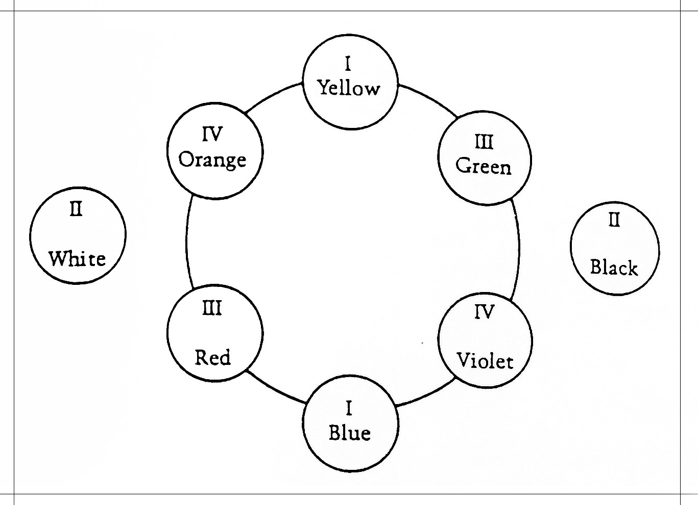
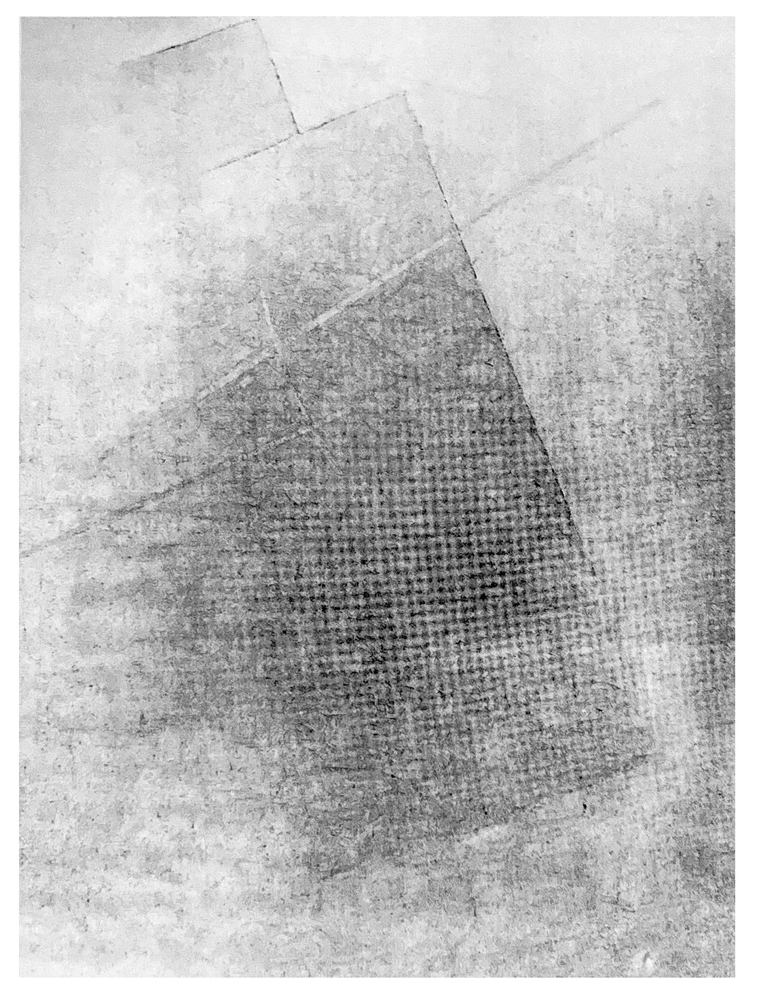
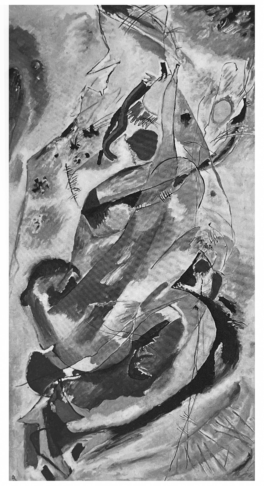
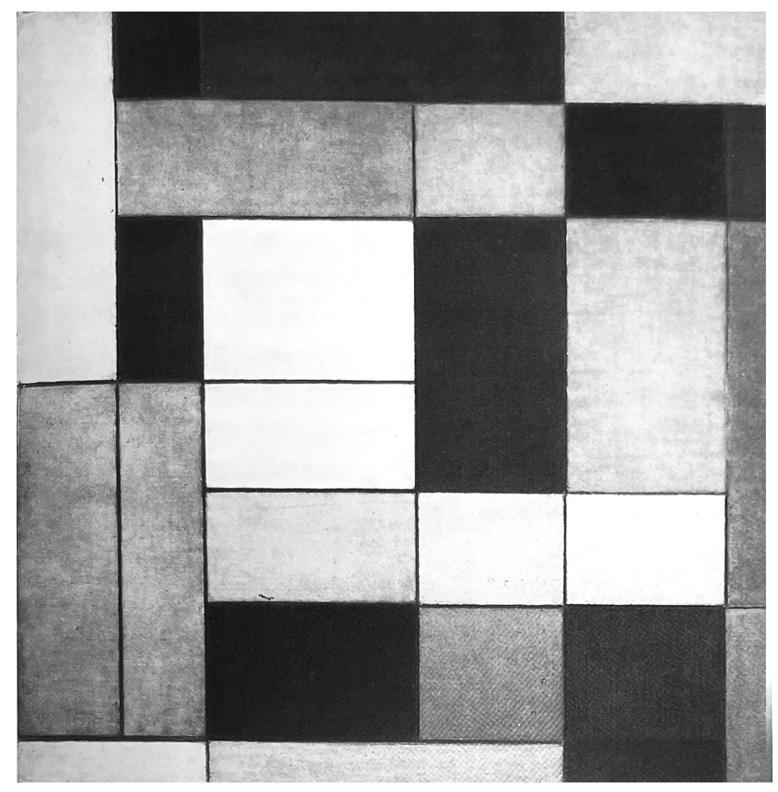

추상화의 역사는 이제 막 기록되기 시작했을 뿐이고, 미술 철학자들은 포스트모더니즘 시대에 충분히 어울릴 만큼, 추상 그 자체의 역사에 있어 본질적인 문제에 대한 관심보다는 추상하고 있는 것, 그것이 수반하고 있는 것, 표현하고 있는 것에 일반적으로 더 관심을 갖고 있는 것이 분명하다. 그것은 구상 미술과 비구상 미술간의 연속성을 추적해야 한다는 뒤늦은 깨달음을 통해 어렵지 않게 판명되었다. 그리고 구상으로 출발했던 칸딘스키, 말레비치, 몬드리안 같은 핵심 인물들의 긴 활동 이력은 이런 연속성을 구성하는데 일종의 타당성을 부여하는 것처럼 보였다. 그러나 칸딘스키는 결국 자신의 그림이 인식 가능한 대상에 의해 해를 입었다는 것을 깨달았을 때, 유난히 솔직한 자전적 에세이에서 자신의 느낌을 다소 독특하게 설명했다.
모든 종류의 질문 속에 있는 무서운 심연,
많은 책임이 내 앞에 놓여 있다.
그리고 무엇보다 가장 중요한 것,
무엇이 놓쳐버린 대상을 대신하는가?
칸딘스키가 직면했던 딜레마의 요점은 초기 추상에서 내용의 중요성이다. 그러나 추상화 발전의 초기인 1차 대전 당시부터 추상 미술을 비평하는 데 있어 내용은 거의 관심의 대상이 되지 못했다. 대부분의 경우 2차 자료뿐아니라 1차 자료들도 빼놓지 않고, 자율적인 비구상주의적 활동으로서의 추상이라는 이야기를 한다. 그리고 인류학자 레비스트로스Clarde Levi-Straruss나 미술사가 곰브리치는 그들이 보기에 내용에 관심이 없는 비평이 추상의 실패로 이어진 것이라고 생각하게 되었다. 초기 추상의 한 분파인 러시아 절대주의는 매우 직접적으로, 언어의 본질이라는 논의의 맥락에 그 힘을 빚지고 있다. 그러나 주로 초기 추상에서 색채의 문제를 찾고자 하는데, 그 이유는 색채가 그 세기 초반에 특별한 의미론적 자양분의 영역이었기 때문이다. 또한 그것이 이탈리아 콰트로첸토 시대의 성모 마리아 도상 연구만큼 복잡하며 또한 반향을 일으킨 초기 추상화에 내용적인 부분을 제공하기 때문이다.
좋은 출발점은 다시 칸딘스키이다. 그의 첫 번째 주요 저서 '예술에서의 정신적인 것'On the spitual in Art, 1911-12에 실린 색채에 대한 논의는 심지어 반Stephen Bann같은 추상 지지자들에게도 많은 공격을 받았는데, 반은 다음과 같이 썼다.
"나는 칸딘스키에 의해 선전된 형태, 색채, 의미의 특수 방정식을
전혀 그럴듯하지 않은 것으로 여기며 거부할 것이다."
신지학과 칸딘스키에서의 색채[1]
칸딘스키만이 색채와 형태가 감정의 언어를 구성한다고 주장한 것은 아니었다. 그러나 만약 우리가 신지학 운동의 문헌에서, 색채를 다루는 칸딘스키를 그가 사용한 자료들 중 하나와 비교하면, 우리는 화가가 얼마나 더 엄격했는지 알게 될 것이다. 신지학의 체계는 베산트Besant와 리드비터Leadbeater의 '사고-형태'Thought-Gorms, 1901에서 상당히 임의적으로 배열된 것처럼 보인다. 비록 그것이 도덕적 색채 공간의 개념(어둠과 오염의 반대되는 것으로서 밝음과 순수성)을 통합할지라도 말이다. 예를 들어 두 가지로 폭넓게 나뉜 빨강은 '순수한 애정'과 '탐욕'이라는 꽤 대조되는 의미를 부여받는다. 신지학 텍스트는 색채가 어떠한 기aura에 익숙한 신봉자에 의해 경험될 때 색채를 해석한 것과 관련된다. 반면 칸딘스키는 자신이 색채 그 자체의 속성이라고 생각한 것에서부터 시작한다. 따뜻하고 차가운, 밝고 어두운 또는 상보성의 양극 대비. 그리고 그는 이것을 자신이 뜻한 것과 단단히 연동시킨 임시틀을 제공하는 일련의 대조로 분명히 표현했다. 초록에 대한 각각의 취급은 유익하다. 베산트와 리드비터는 '사고-형태'서 다음과 같이 썼다.
초록은 항상 적응성을 나타내는 것처럼 보인다.
이기심과 섞인 좋지 않은 경우에, 이 적응성은 속임수가 된다.
비록 색채가 더 순수해지는 다음 단계에서는, 주로 인기를 얻고
좋은 평판을 얻기 위해서라도, 그것은 오히려 모든 사람에게 모든 것이
되고자 하는 바람을 의미한다. 훨씬 더 고귀하고 더 섬세하고 더 빛나는
측면에서, 그것은 연민의 신성한 힘을 보여준다.
그러나 칸딘스키는 초기에, 즉 화가로서의 구상적 시기에 특히 초록에 이끌렸는데 그것은 주변적인 노랑과 중심적인 파랑이 합쳐져 생긴 산물이었기 때문이다. 또 그것은 고요하지만 지루하기도 한 표현이었다.
이렇듯 순수한 초록은 색채의 영역에서 마치 인간 사회의 부르주아와 같다.
그것은 모든 측면에서 제한된, 고정되고 무관심한 요소이다.
이런 초록은 어리석고 활기 없는 눈으로 세계를 보면서 되새김질하는 데만 익숙해진,
움직이지 않고 누워 있는 뚱뚱하고 매우 건강한 소 같다.

'에술에서의 정신적인 것'로부터 가져온 칸딘스키의 대립 쌍. 1911-12년 그가 주황-보라색 대립 쌍과 흑백에 '죽음'과 '탄생'으로 특징을 부여한 것이 모두 이상해 보일지라도, 그의 도식은 비엔나의 심리학자 헤링의 '대립 색채'opponent colours에 가깝다.
칸딘스키가 양극 도식으로 색채를 배열한 것은 분명히 그가 초기 색채 체계에 대한 계승자이자 특히 괴테와 비엔나의 심리학자 헤링Ewald Hering의 계승자임을 나타낸다. 헤링의 색채 인지 이론은 세 가지의 보색인 검정-하양, 빨강-초록, 파랑-노랑에 근거했다. 이러한 그의 관점은 신비롭거나 '그럴듯하지 않거나' 심지어 매우 개인적인 것과는 거리가 멀다. 왜나하면 세부적으로 항상 그렇지는 않았을지라고 그것들이 원칙적으로 화가에게 매우 친숙한 공감각의 효과를 내포했던, 널리 논의된 심리학적 교리에 의지했기 때문이다. 예를 들어 칸딘스키가 플루트의 음색을 담청색으로 이해한 것은, 1870년대에 몇몇 심리학자와 미학자들이 제기하고 분트에 의해 활용된 이론을 따랐기 때문이다.>
원색의 중요성[1]1920년대초의 빨강-파랑 의자 운동을 상징화한 건축가이자 디자이너, 게리트 리트벨트Gerrit Rietveld는 빨강, 노랑, 파랑이 색각의 '원색'이라는 잘못된 관점을 갖고 있었다. 그리고 화가이자 조각가인 반통겔루Georges Vantonggerloo는 비록 오스트발트를 잠시 추종했지만 스펙트럼에서 파장의 수학적 분석을 사용하여 색채 조화의 영적인 해석을 광범위하게 발전시켰다. 심지어 몬드리안은 1929년에도 여전히 자신의 색채들을 상징적 용어로 생각하고 있었다. 몬드리안의 친구였던 네델란드 신지학자 쇤메커스Matthieu J, H, Schoenmaekers에 의해 1916년에 다시 언급된 괴테 이론과 신지학에 대한 초기의 관심사를 관련짓는 방식으로, 빨강은 더 '외향적'이거나 '현실적'이며 파랑과 노랑은 더 '내성적'이거나 '영적'인 것이 되었다. 이 모든 구별을 넘어 데 스틸 미술가들을 결합시킨 것은 그와 같은 원색의 중요성에 대한 믿음이었고, 이것은 명백히 19세기의 환원주의적이고 대칭적인 색채 체계의 유산이다.
물론 빨강, 노랑, 파랑이 유일한 '원색' 3인조 또는 가장 특권적인 색은 아니다. 훨씬 더 오래되고 더 보편적인 색채 세트인 검정, 하양, 빨강이 최근에 주로 비유럽 문화의 발전과 연계되어 있는 언어 인류학적 연구에서 다시 명성을 얻었다. 여기서 가장 초기의 색채 범주는 밝고 어두운 것이며, 거의 보편적으로 '빨강'이라는 용어가 뒤따랐다. 초기 추상화에서 이 세트는 첫 번째 기하학적 추상파인 말레비치의 절대주의가 성행했던 러시아에서 특히 두드러진 위치에 있었다. 말레비치는 1920년에 쓴 에세이에서 그림에 도입한 검정, 빨강, 하양 사각형의 비율에 따라 그의 운동을 세 단계로 나눴다. 검정은 경제의 세속적 관점을 표현했고, 빨강은 혁명을, 하양은 순수한 행위를 표현했다. 그리고 그중에서 하양과 검정은 빨강보다 더 중요했고, 하양은 모든 것의 장점이었다. 말레비치는 검정과 하양을 색채 스펙트럼에서 유도된 것으로 생각하면서 색채 과학에 꽤 양면적인 공헌을 했다. 그리고 일련의 위대한 회화 '흰색 위의 흰색'white on white이 알려주는, 하양이 지닌 많은 뉘앙스의 지배력이 초기 러시아 성상에 대한 관심의 부활에 의해 자극되었다. 그럼에도 불구하고 종종 금색에 대한 대용물로 사용되던 크림색, 황백색off-white과 더불어 절대주의 색채 체계에서 하양의 위치는 본질적으로 연합적이고 문학적이었음을 거의 의심할 수 없다. 말레비치가 언급한 것 가운데 가장 알려진 부분은 다음과 같다. 이는 마치 러시아 상징주의자 벨르이Belyi와 블로크Blok의 시에서 나타난 것처럼 하양의 초월적 해석을 반영한다.
하늘의 하양은 절대주의 체계에 의해 패배했고 또 격파되어,
사실적이고 실질적인 무한 개념, 그 하양 속으로 들어갔고,
그리하여 하늘의 배경을 색채로부터 해방시켰다....
앞으로 나아가라! 하양. 자유로운 틈. 무한이 우리 앞에 있다....

그의 위대한 '흰색 위의 흰색'시리즈로부터 가져온 사례인 말레비치의 '절대주의 회화'Suprematist Painting, 1917-18년
색채의 언어[1]말레비치는 시인이자 이론가인 클레브니코프Velimir Khlebnikov의 친구였고, 언어학자 로만 야콥슨Roman Kakobson의 친구이기도 했다. 야콥슨을 통해서 말레비치는 기초 음성학 분야에서 갑자기 출현한 모스크바 언어 학파Moscow Linguistic Circle의 작업에 친숙해 질 수 있었음에 틀림없다. 클레브니코프는 실제로 1913년에, 한 아리아는 전부 모음으로 구성되고 다른 것은 전부 자음으로 구성되었던 오페라 '태양 너머의 승리'Vicotry over the Sun에서 말레비치와 함께 작업을 했다. 클레브니코프와 야콥슨은 말소리, 특히 모음 소리가 부지불식간에 색채와 연관되는 '채색된 청각'audition cliree이라 알려진 공감각의 측면에 관심을 가졌다. 그리고 실제로 야콥슨은 그런 현상에 꾸준하게 관심을 가졌던 극히 소수의 언어 연구자들 중 하나인 것처럼 보인다. 1916년까지 말레비치와 친했던 야콥슨은 이미 검정, 하양, 빨강에 대한 유아의 선호를 언어음speech sound의 초기 발달과 관련시키기 시작했는데, 언어음에서 'a'는 몇몇 권위자에 따르면 검정과 연합된 'w'에 기본적인 표음 대비를 제공했던 것이다. 클레브니코프는 1919년의 성명서에서 세계의 화가들에게 보편 언어의 설립에 대한 도움을 호소했다. 왜냐하면
색채 화가의 과제가 이해의 기본 단위에 기하학적 표시를 부여하는 것이었기 때문이다....
색채에 대한 의지를 갖는 것 그리고 암청색을 가지고 M을, 초록을 가지고 W를,
빨강을 가지고 B를, 회색을 가지고 E를, 하양을 가지고 L을 표현하는 것이 가능할 것이다.
러시아에서 회화적, 언어적 연구는 이런 식으로 기본의 확인과 표현으로 기울어졌고, 이런 조사 영역은 1920년대, 즉 메우 최근에 채색된 청각에 대한 관심이 마지막으로 번성했던 시기에 소비에트 연방 미술 학교Soviet State Art School교육 과정의 일부가 되었다. 혁명 이후 곧바로 교육 프로그램 중 일부를 만드는데 참여했던 칸딘스키는, 10년 후 독일 바우하우스로 돌아왔을 때 자신이 관심을 갖고 있었던 일련의 연구를 수행한다. 그리고 실제로 오스트발트의 색채 이론이 폭넓게 채택되었던 러시아에서, 칸딘스키의 연구는 혁명기와 혁명 이후 시기 미술협회의 모델을 제공했던 19세기 후반 독일의 심리학 실험실에서 수행되었던 것이다.
그 결과 초기의 추상화가들은 그들이 언어라는 성질 안에서 색채를 고려할 수 있도록, 언어와 색채 사이에 연결이 잘 이루어지는 다수의 색채 체계를 제공받았다. 화가들이 이런 언어를 사용한 것이 단순히 이런 색채 체계가 인지 능력이라는 개념에 근거한다기 보다는 과학과 상징주의 원칙에 의존했기 때문이라는 점은 그리 놀라운 일이 아니다. 비록 그것이 유감스러운 문제이기는 할지라도, 1900년대를 아우르는 '보편'이라는 기능성을 제공한 것처럼 보이는, 이 색채의 언어가 완전히 긴밀했다는 점도 또한 전적으로 놀랄 일만은 아니다.
칸딘스키의 색채 문법[1]
나에게 강한 인상을 준 첫 번째 색들은 밝고 윤택이 있는
초록, 하양, 암적색, 검정, 노란 황토색이었다.
이 기억은 내 인색의 세 번째 해로 돌아간다.
색채 그 자체만큼은 내 마음에 분명하게 남아 있지않아
나는 다양한 관심을 가지고 이 색들을 보았다.
-칸딘스키, 회상[Reminiscences, 1913], 번역. Herbert-
칸딘스키는 자전적 에세이의 이 도입 구절에서 본능적이고 뿌리 깊은 색채주의자로서 뿐 아니라, 1911년 카츠가 엷은 막film의 색채로 특징지었던 것에 대한 자신이 경험한 것을 묘사하는 자아성찰자로서의 자신을 표현했다. '예술의 정신적인 것'On the Spiritual in Art 1911-12에서 제시된 칸딘스키의 색채 이론에 대한 주석지는 신지학, 특히 1908년 이후의 화가가 매우 친숙했던 루돌프 슈타이너Rudolph Steiner의 저술과 그 이론의 연결을 강조한다.
칸딘스키는 바우하우스에서 전쟁 이후에만 현대 심리학에 관심을 두었다고 언급되는데, 바우하우스는 그의 실험적 방법을 통한 가르침의 매우 많은 부분이 남겨진 곳이다. 그리고 칸딘스키 논문의 색채 공식은 그보다 훨씬 더 먼저 관심을 제기했다. 이 시대에 그가 보인 집착 중 하나는 그가 음악 '문법'에서 보았던 수준만큼 회화 '문법'을 확립하는 것이었다. 그는 회화가 통주저음through-bass,(다른 부분의 연속적 정교화를 미리 결정짓는 점수로 기저를 설정하는 18세기 방법)을 필요로 한다는 괴테의 발언을 인용했는데, 이는 1912년의 맥락에서는 모순이 있는 인용이었으며, 이 시대에 칸딘스키의 친구이자 공동 연구자인 아널드 쇤베르크Arnold Schoenberg는 그 방법이 전적으로 시대에 뒤떨어졌다고 주장하고 있었다.('조화론, Theory of Harmony, 1911)
칸디스키의 초기 추상은 여전히 그의 이전 회화의 형상화에 실제로 존재한다. 1914년 캠벨Campbell을 위한 장식 벽화에서, 중간 부분은 묵시록적 주제 (예를 들어 1911년 뮌헨에서의 '부활Resurrection)중 일부에서 천사에 의해 연주되는 트럼펫에 인접한, 광범위한 노랑과 진홍의 형태를 포함한다. 칸딘스키의 공감각적 본능은 진홍과 트럼펫 소리를 연합시켰다.
공감각에대한 논의에서 분트는 칸딘스키의 것과 가까운 몇몇 음악적 색채의 사례를 소개했다. 진홍색 트럼펫은 18세기로 되돌아가는 매우 전통적인 등가물이었지만, 플루트의 담청색은 19세기 후반의 심리학 문헌에 기록된 더 최근에 경험된 상응물이다.
칸딘스키는 전후에 모스크바 미술 문화협회Moscow Institute of Art Culture의 교육과정을 위한 제안에서 색채의 주술적 측면뿐만 아니라 의학 및 생리학적 측면의 연구를 소개했다. 그리고 그는 3년 후에 바우하우스에서 이 모든 연구가 정확한 측정과 실험애 의해 수행되었음을 강조하면서 주술을 제거하고 심리학을 추가했다. 그의 악명 높은 외도는 세 가지 원색 빨강, 노랑, 파랑이 세 가지 1차 형태인 삼각형, 원, 사각형에 할당되는지를 묻는 바이마르 주민을 표본으로 발송된 천 장의 엽서를 통한 조사였다. 그러나 조사 결과대로 이 연구의 심리학적 가설은, '날카로운 색채가 날카로운 형태보다 더 강한 소리를 가지고 있다'라고 제안했던 칸딘스키의 '예술에서의 정신적인 것'에서 1912년에 이미 제기된 것이었다. 색채의 보편 언어에 대한 칸딘스키의 관심이 뮌헨 청기사파 연감에서보다 더 분명히 드러난 곳은 없다. 거기서 출판된 그의 무대 작품, '노란소리'The Yellow Sound는 미학적 원리로서의 가장 이른 공감각 징후 중 하나이다. 그러나 더 중요한 것은 그 연감이 순수 미술과 대중 미술, 아동과 아마추어 미술, 아프리카, 아시아, 폴리네시아, 아메리카로부터 온 미술을 처음으로 함께 제시하고 있다는 점이다.
들로네의 실용적 이론[1]1931년 '현대'Aujourd'bui에 기고하던 시인 상드라르Blaise Cendrars는 자신이 1912년 말에 만났던 들로네를 포함한 파리파에 대해 기술하고 있다. 들로네는 여전히 1년 전에 시작했던 '창'Windows을 연작으로 작업하고 있었지만, 아마도 1913년에 자신의 작품 세계에서 완전히 새로운 족적을 남긴 '해'sun와 '달Moon 연작을 그리기 시작한 듯하고, 1941년 죽을 때까지 그 기반을 효과적으로 닦았다. 화가들과 비평가들은 이 시기의 작업을 프랑스에서의 첫 번째 비구상 미술로 보았다. 들로네가 동시에 정교화하기 시작했던 미술 이론에 비춰 이것이 시작된 해인 1912년의 화화를 조사할 가치가 있는데, 왜냐하면 그 비교는 그가 얼마나 실험 방법을 발전시켰는가를 보여 줄 것이기 때문이다.
들로네는 이러한 회화 양식을 동시성simultane이라고 불렀다. 그는 다음과 같이 주장하며 1839년의 논문, '색의 동시 대비 법칙에 대하여'On the Law of Simultaneous Contrast of Colours의 초점을 이루는 특별한 종류의 색채 대비에 슈브뢸의 개념어를 채택했다.
눈이 동시에 두 개의 연속되는 색채를 보는 경우에, 그것들은 광학적 구성과
톤의 높이 양쪽에서 가능한 한 비슷하지 않게 나타날 것이다.
들로네는 그의 그림과 그의 친구 장 메챙제Jean Metzinger의 그림이 신인상주의 시기를 거쳤을 때인, 1906년에 슈브뢸을 연구했다. 이 시기의 적품을 특징짓는 커다란 사각형의 형태를 띤 붓질은 쇠라가 보여 주었던 더 작은 점들의 희끗희끗한 효과에 반대되는 반응이었으며, 1906/7년 들로네의 '원반이 있는 풍경'Landscapr with Disc에서 또한 표현적 수단으로 사용되었다. 커다란 색채 조각들이 광학적으로 혼합되지 않아 생긴 진동은 그림의 역동적 주제인 태양과 직접적 관계를 갖는다. 이 그림은 또한 보색 잔상(빨강-초록)으로 작동하기도 했으나, 그것이 슈브렐의 계속된 연구를 표현한다고 추정할 수 있는 이유는 없다.
프랑스의 색채역학은 '색원'Cercle Chromatique,1889에서 빨강은 수직으로 또 위쪽으로 움직이는 것, 파랑은 수평으로 또 오른쪽에서 왼쪽으로 움직이는 것으로 표현했던 샤를 앙리Charles Henry의 특별한 관심거리였다. 들로네는 또한 색채 운동에 대한 깊은 관심을 칸딘스키와 공유했는데, 칸딘스키의 '예술에서의 정신적인 것'을 칸딘스키에게 받았으나 바로 읽을 수는 없었다. 그러나 운동이 투명성의 수단을 통해 달성될 수 있다는 것은 들로네 자신의 개념이었고, 색채 운동 그 자체처럼 슈브뢸과는 거의 관련이 없었다. 그러나 슈브뢸은 스테인드글라스 창문과 특히 장미창에 대한 논의를 동시 대비의 눈부신 예로 소개했다. 그가 그것들을 아름답게 여기는 이유는 다음과 같다.
1. 매우 단순한 디자인. 다르지만 아주 멀리서도 혼란 없이 보이는, 잘 정의된 부분을 제시하고 있다.
2. 그것들 사이에서뿐만 아니라 그것들은 경계 짓는 불투명한 부분을 가지며 동시에 생생하게 대비되는,
일종의 대칭성을 가지고 배분된 채색 부분의 결합union을 제공하고 있다.

들로네처럼 장 메챙제는 점묘주의의 '점'을 빽빽한 '입방체'의 모자이크로 전환시켰다. 더 추상적인 이러한 방법은, 그가 1907년 설명했듯이. '빛의 객관적표현'을 위해 의도되진 않았지만, '무지개빛과 회화에는 여전히 낯선 색채의 어떤 측면'을 잡아내고자 의도되었다. 1906/7년 '풍경Landscape, 일몰[Coucher de Soleil]의 태양을 처리한 방식은 '원반이 있는 풍경'Landscape with Disc에서의 들로네의 것에 가깝다.
양쪽의 모두 대비와 대칭을 실질적으로 사용한 '창'에서 들로네에 의해 적용되었다. 투명성에 대한 들로네의 관심은 또한 1907년과 1912년에 작업했던 랑Laon의 스테인글라스 그리고 성 세브렝Saint-Severin 교회에서 1909년-12년의 '창' 연작으로 그를 이끌었던 것은 이 창문의 경험이었을 것이다. 들로네가 광택lustre 현상을 통해 전면적으로 투명하게 하는데 관심이 있었음은 거의 의심할 여지가 없다.
'창' 연작 그림 중 첫 번째 색채는 실제로 흐릿하고 엷다. 들로네는 1912년 초의 '동시 창'Simultaneous windows까지 주황과 초록, 노랑과 보라의 강한 동시 보색 또는 보색에 가까운 대비로 구성을 하지 않았다. 그때까지는 1910-11년의 피카소 입체주의 작품에 대한 연구로부터 그리고 더 흥미롭게는 세잔의 후기 작품으로부터 유도된 색채의 모난 면에 찬동하여 점찍는 기법의 사용을 버리지 않았다.
회화에 대한 그의 실험적 접근에서 1914년 들로네가 그린 '원반'의 위치가 과대 평가될 수는 없다. 1912년 쿱카Kupka의 '뉴턴의 원반'Discs of Newton처럼 원형은 여전히 주제적 그림이고, 들로네의 독일인 참미자인 클레, 마르크와 달리 그가 1차 대전 이전에 추상 미술의 개념을 갖지 않았다고 주장할 수 있다. 그러나 '원반'과 그 선례는, 들로네가 표현적 수단과의 관계에서 화가의 역할을 실험 심리학자의 역할과 유사한 것으로 생각했음을 명백히 보여준다.
몬드리안의 1차 질서, 오스트발트의 조화론[1]오스트발트는 하양과 검정 시이에 회색의 척도를 설정함으로써 색채에 처음으로 적용시켰다. 이 회색 척도에서 각각의 지각 단계는 하양에 대한 검정의 비율을 기하학적으로 증가시킴으로서 만들어졌다. 그는 이 회색 척도를 색원에서 색상 각각의 척도에 적용했는데, 이색원은 처음에 100개의 색상 분할을 가졌지만 그 후에 24개로 단순화되었다. 이 24개 색상은 네 가지 심리적 원색인 빨강, 노랑, 파랑, 초록의 체계에 근거하였는데 오스트발트는 이 색상를 '상보적' 짝으로 나누었던 헤링(광감각 강의, 1878)으로부터 유도해냈다. 검정과 하양, 파랑과 노랑, 초록과 빨강이 그 짝이다. 오스트발트의 이론은 짧은 책, '색채 안내서'Die Farbenfibel에 담겨 1916년에 처음 발표되었고, 테오판 두스브르흐, 몬드리안, 바트 판데어 레크, 빌모스 후자vilmos Huszar에 의해 1917년 설립된 독일의 데 스틸에 의해 즉시 채택되었다. 그리고 오스트발트 컨셉의 이 측면에 큰 관심을 보인 첫 화가는 몬드리안이었다.
몬드리안은 약 1908년 이후 눈부신 야수파 같은 색갈로 그림을 그리고 있었다. 또한 거의 동시에 신인상주위에도 짧게 참여해 '점묘주의 또는 확산된 방식으로' 나란히 놓인 순수한 색채라는 단순한 교리를 공식화하도록 유도되었다. 그러나 1911년부터 1912년까지 입체파와의 격돌은 그의 교리를 색채의 문제로부터 멀리 돌려놓았다. 우리가 몬드리안이 칸딘스키의 '예술에서의 정신적인 것'을 우연히 접했고, 빨강과 초록을 여성과 남성, 외적 및 내적 색채의 상보적 관계로 생각하고 있었다는 암시를 발견하게 되는 것은 1914년의 스케치북에서뿐이다. 각각 외적인 것과 내적인 것으로서의 빨강과 초록에 대한 몬드리안의 묘사는 단순히 살flesh에 대한 모형화에서의 역할을 언급하는 것이지만, 정황은 그것들이 색채들에 대한 칸딘스키의 평은 아니더라도 몬드리안이 1909년 이후로 함께한 신지학자들의 것과는 매우 가깝다. 베산트와 리드비터의 '사고-형태'Thought-Forms, 1901에서 몬드리안의 빨갛고 여성적이며 물질적인 색채인 자만, 탐욕, 분노, 관능의 특징이고, 초록의 남성적이고 영적인 평가는 공감과 순응의 특징이다. 몬드리안은 아마도 1917년까지 후자Huszar의 인도에 따라 하양, 검정, 회색에 삼원색인 빨강, 노랑, 파랑을 더해 기본적 색깔을 채택했을 것이다. 그는 여전히 빨강을 본질적으로 '외향적' 색채로 간주했고, 괴테, 칸딘스키, 네델란드 신지학자 쇤메커스를 따라 노랑과 파랑은 더 '내성적인' 색채라고 했지만 이제 회화 안에서 삼원색이 함께 제공될 수 없다고 주장했다.
1920년 '회색, 빨강, 노랑, 파랑으로 된 구성'에서 데 스틸 미술가 몬드리안은 회색이 조화의 주요 조절자였던 오슽발트의 지속적 영향을 시사하면서, 더 '내향적인' 파랑, 노랑과 그가 '외향적' 색채로 간주했던 빨강을 사용한다. [그러나 회색과 조합하여 사용하는데, 그는 회색에 '일차적안 비색non-colour'이라는 이상한 역할을 부여하였다.]
몬드리안은 잡지 '데 스틸'에 실린 색채를 다룬 글애 대한 각주에서, 검정과 하양이 노랑, 빨강, 초록으로 혼합되었다고 썼지만 이것들은 여전히 원색으로 남는다. 그 시기의 그림에서, 그는 색채 조화가 주로 명도를 조절함으로써 이뤄진다는 오트발트의 관점과 분명히 관련되는, 매우 채도가 떨어지는 원색을 사용했다. 이런 원칙을 사용하기 위한 가장 초기의 구성은 '구성'Composition,1916인 것처럼 보이지만, 개념은 1917년과 18년에, 예를 들어 '색채 평면을 가진 구성 NO.3, 구성: 회색 윤곽을 가진 색채 평면' 1920년의 '회색, 빨강, 노랑, 파랑으로 된 구성'에서 훨씬 더 체계적으로 탐구되었다. 그리고 1920년대까지는 몬드리안이 많은 회색을 그의 원색에 잘 혼합시키고 있었다.
신조형주의에서 색채의 요소를 제외하고는 자신의 관심을 저채도화와 회색에 대한 관심으로부터 멀찍히 이동시켰던 그 10년 동안, 몬드리안의 철저하게 비구상적인 첫 번째 스타일은 전쟁 중 또 그 직후에 오스트발트의 전망에 의해 강력하게 자극받았다. 그 전망은 색채에 대한 심리적 반응을 정량화시키고 그리하여 그것을 수학적 연구로 삼는 것을 가능하게 했던 것이다.
[참고문헌]
[1 색채의 역사-미술, 과학 그리고 상징, 존 게이지 지음, 박수진 한재현 옮김, (주)사회 평론, 2011. 5.11
....
....
....
....
....
....
....